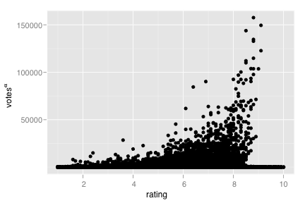
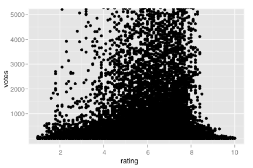
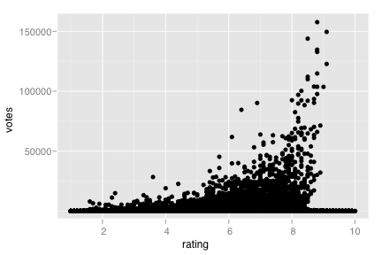
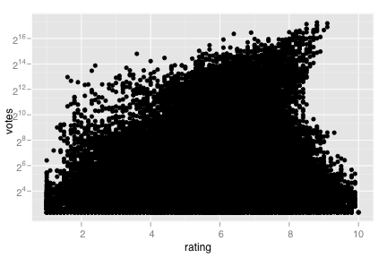
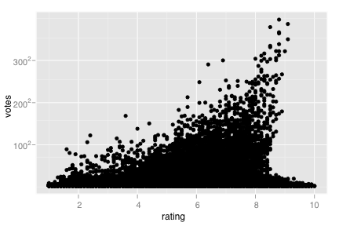
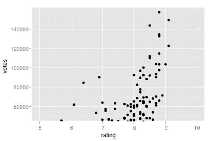
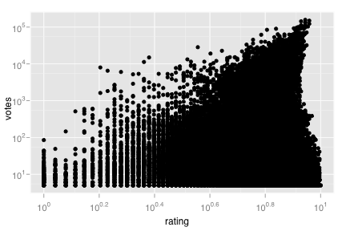

scale_prob
Probability scale
Details
See also
Examples
> (m <- qplot(rating, votes, data=movies))> > # Manipulating the default position scales lets you: > > # * change the axis labels > m + scale_y_continuous("number of votes")
> m + scale_y_continuous(expression(votes^alpha))  > > # * modify the axis limits > m + scale_y_continuous(limits=c(NA, 5000))  > m + scale_y_continuous(limits=c(1000, NA))  > m + scale_x_continuous(limits=c(7, 8))
> > # * choose where the ticks appear > m + scale_x_continuous(breaks=1:10) > m + scale_x_continuous(breaks=c(1,3,7,9)) > > # There are also a wide range of transformations you can use: > m + scale_y_log10() > m + scale_y_log()
> m + scale_y_log2()  > m + scale_y_sqrt()  > # see ?transformer for a full list > > # qplot allows you to do some of this with a little less typing: > # * axis limits > qplot(rating, votes, data=movies, xlim=c(5,10), ylim=c(50000, NA))  > # * axis labels > qplot(rating, votes, data=movies, xlab="My x axis", ylab="My y axis") > # * log scaling > qplot(rating, votes, data=movies, log="xy") 